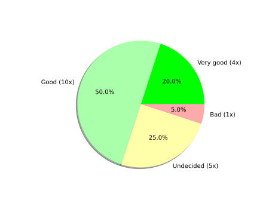
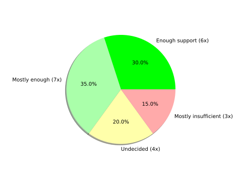
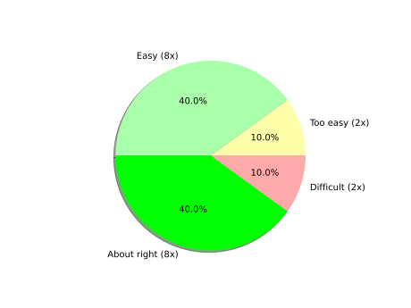
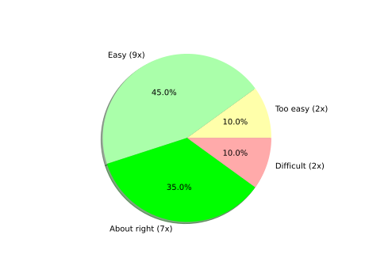
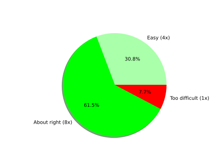
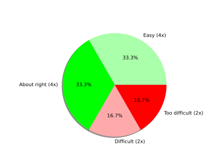
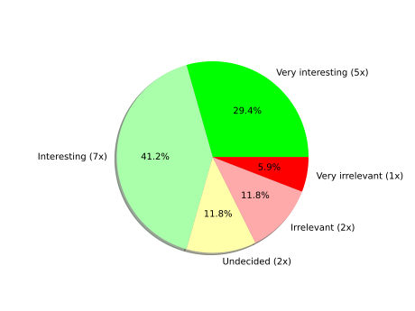
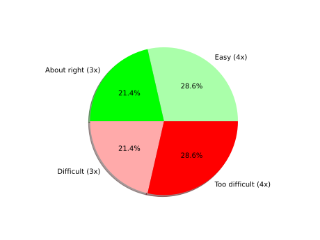

MoBi FS3 Python Course WS 23/24
Feedback participants: 20
Supervisors: Kerem, Janis, Ran, Moritz, Renpeng, Leonid
How was your impression of the course organization?
Options: Very good, Good, Undecided, Bad, Very bad
How was your experience with GitHub and Codespaces?
Options: Very smooth, Mostly smooth, Undecided, Didn't like it, Didn't like it at all

Have you received enough support from the supervisors?
Options: Enough support, Mostly enough, Undecided, Mostly insufficient, Insufficient support
Have you mostly worked alone or in groups?

For you personally, what was the greatest challenge? For example, were there any specific problems which you ran into very often?
16 answer(s)
- All
- Finden der richtigen Funktionen und ausdrücke um bestimmt Sachen zu erreichen
- Sehr sehr schwer anzufangen zu codieren mit komplexen Fragenstellungen. Wenn man eine Beispielmaske mal gesehen hätte wäre das sehr hilfreich (also eine in der Programmiersprache und nicht als eine Tabelle)
- Es fühlt sich an als würde mir die Grammatik zu einer Sprache gezeigt (die Theorie) aber die Vokabeln die ich brauche um die Sprache zu sprechen werden ausgelassen. Als Anfänger wäre es hilfreich einen art "Startpunkt" zu den ganzen Masken zu kriegen und wie so ein Filter nicht nur in der Theorie aussieht sondern auch in der Programmiersprache
- I often didn’t know what to do at all because I had to little knowledge and the exercise sheet provides to little support and you also don‘t have the whole lecture memorized after watching it once.
- It was nice to learn a new programming language. Never less it was harder than imagined. Mostly because the work instruction weren't clear enough. If I asked I got help, but not enough to understand the task oder code.
For you personally, what was the greatest challenge? For example, were there any specific problems which you ran into very often?
16 answer(s)
- I had difficulties starting tasks especially when we should define a function for the mean filter from scratch.
- Careless mistakes like forgetting colons or tabs in if sequences. Understanding how to translate my idea into proper code
- Missing instructions for people who worked with python the first time
- some specific numpy commands that we needed for tasks were not given to us in the worksheet (i. e. numpy. sort the worksheet referred to a different command that didnt work)
- Sometimes necessary commands were not given (so it wasn’t clear how to even start solving the task, e.g. numpy.sort for Task 3 instead of just sort)
- it would have been nice to get a more general introduction into python and general commands that can be used. sometimes we were missing some commands in the exercise sheets that would have been helpful to know. in general I really liked the course!
For you personally, what was the greatest challenge? For example, were there any specific problems which you ran into very often?
16 answer(s)
- Debugging the small mistakes (e.x. not sorting the list) Imaging the border of the picture and what is included/excluded
- My biggest problem was when I tried to work at home and was asked for the kernel. But I received great support via email
- Keine klare Aufgabenstellung, Umsetzung der Fragestellung in Programmiersprache
- None but if their was the supervisors figured it out in no time
Lab Session 1
Lab Session 1
In your opinion, how helpful was the introduction to GitHub, Codespaces, Visual Studio Code, and Jupyter Notebooks in Lab Session 1?
Options: Very helpful, Helpful, Undecided, Irrelevant, Very irrelevant

Lab Session 1
How difficult was Task 1.4? (Writing loops in Python)
Options: Too easy, Easy, About right, Difficult, Too difficult

Lab Session 1
Please only answer if you chose "too difficult" for one of the questions above. For you personally, what was the greatest challenge?
1 answer(s)
- Too little support. The tutors always helped but from my point of view there should have been more advise from the exercise sheet.
Lab Session 2
Lab Session 2
In your opinion, how interesting/relevant was Lab Session 2?
Options: Very interesting, Interesting, Undecided, Irrelevant, Very irrelevant

Lab Session 2
How difficult was Task 1? (Image IO)
Options: Too easy, Easy, About right, Difficult, Too difficult
Lab Session 2
How difficult was Task 2? (Histograms)
Options: Too easy, Easy, About right, Difficult, Too difficult
Lab Session 2
How difficult was Task 3? (Intensity clipping)
Options: Too easy, Easy, About right, Difficult, Too difficult

Lab Session 2
Please only answer this question if you tried the Bonus Task (Writing re-usable code). How difficult was it?
Options: Too easy, Easy, About right, Difficult, Too difficult
Lab Session 2
Please only answer if you chose "too difficult" for one of the questions above. For you personally, what was the greatest challenge?
2 answer(s)
- Same as before
- Not too difficult but sometimes it wasn't clear what these functions can be used for in actual projects
Lab Session 3
Lab Session 3
In your opinion, how interesting/relevant was Lab Session 3?
Options: Very interesting, Interesting, Undecided, Irrelevant, Very irrelevant

Lab Session 3
How difficult was Task 1? (Linear filtering by convolution)
Options: Too easy, Easy, About right, Difficult, Too difficult

Lab Session 3
How difficult was Task 2? (Non-linear filtering)
Options: Too easy, Easy, About right, Difficult, Too difficult

Lab Session 3
How difficult was Task 3? (Using pre-implemented filters)
Options: Too easy, Easy, About right, Difficult, Too difficult

Lab Session 3
Please only answer this question if you tried the Bonus Task (Slicing and benchmarking). How difficult was it?
Options: Too easy, Easy, About right, Difficult, Too difficult
Lab Session 3
Please only answer if you chose "too difficult" for one of the questions above. For you personally, what was the greatest challenge?
7 answer(s)
- Wir wussten nicht, wie wir anfangen sollen, wir sind leider nicht mit der ersten Nummer von Lab 3 fertig geworden
- Difficulty level was insanely higher then the questions asked before
- See before
- I had no idea what I was doing or what the code means. Even tho I have good knowledge coding in R Studio. However programming here in GitHub was too difficult.
- 1. Understanding how to center (ie why I needed to add q-n to p) 2. calculating the median and how to first define a list and then use the sorted list to get the median / in general how lists work
- Task 2: wasn’t told that you need numpy.sort
- Making sure the position of the filter kernel was moving with the pixel p (you have to connect pixel p with q within the loop)
Lab Session 4
Lab Session 4
In your opinion, how interesting/relevant was Lab Session 4?
Options: Very interesting, Interesting, Undecided, Irrelevant, Very irrelevant
Lab Session 4
How difficult was the Task 1? (Prewitt filter)
Options: Too easy, Easy, About right, Difficult, Too difficult

Lab Session 4
How difficult was the Task 2? (Edge detection)
Options: Too easy, Easy, About right, Difficult, Too difficult

Lab Session 4
How difficult was the Task 3? (Sobel filter)
Options: Too easy, Easy, About right, Difficult, Too difficult
Lab Session 4
Please only answer if you chose "too difficult" for one of the questions above. For you personally, what was the greatest challenge?
8 answer(s)
- Es war ein sehr hohes Niveau
- Look lession 3
- Did take to long - did not know how to go about tuples
- - Figuring out how I can only change the x (or y) values of p while leaving the second coordinate the same - Mixing up the value of p vs. the coordinates of the pixel I am accessing - understanding when p has to be accessed as a whole and when only one of the coordinates
- i would have liked a more obvious hint toward using arrays as filters
- Short introduction into arrays/matrixes would have been helpful
- task 1: some thins were missing in the exercise that would have helped, such as using a matrix for the filter
- Short explanation of how a kernel works (you have to multiple and then take the sum) would be good, even if it was part of the lecture already.
Final Thoughts
Do you have any general criticism or suggestions regarding the organization or the content of the course, or the course as a whole?
13 answer(s)
- Es ist ein sehr hohes Niveau
- Ich fand die Erklärungen gut verständlich und hatte auch immer eine Idee wie ich dies in Code umsetzen kann… allerdings fand ich es schwer die Funktionen und Operatoren zu finden um dies umzusetzen… Vielleicht wäre eine Liste mit möglichen commands hilfreich
- It would be great if we could have the right solution after a practical. This way we could look at the übung again at home without getting frustrated and having something to compare too. I know there are multiple right solutions, but we dont have any starting point and its difficult for a beginner to even start on the exercise.
- I liked that the presentation of the results was of the beginning of the next session and not at the end of the same one, but maybe give enough time for everyone to load their code
Final Thoughts
Do you have any general criticism or suggestions regarding the organization or the content of the course, or the course as a whole?
13 answer(s)
- In general for someone who never coded before the organization in the data analysis part with Carl Hermann was much better. We watched the videos week by week and than had the tutorial every week directly after watching the video, sothat you have more knowledge memorized. Also for every tutorial we had a whole markdown sheet that gave an example how to use the code. After reading through the code I was able to use the code on a different dataset. Contrary in this course I constantly had the feeling that I can‘t do anything in python.
- Please change the assignments pdf in a more detailed one. Also some instructions like import as were missing. And in the beginning of each lesson explain the codes we're gonna use while programming. The time we had to learn python was way to short, that's very sad, because I was so interessed and looked forward to learn it properly
- Aside from presenting the solutions after the session (which was good as we could ask questions immediately), it would be very helpful nonetheless to have the solutions of all exercises uploaded at the end of the course.
Final Thoughts
Do you have any general criticism or suggestions regarding the organization or the content of the course, or the course as a whole?
13 answer(s)
- I think the tasks are explained proficiciently clear on the excercise sheet, so that the time spent on the presentation, in my opinion, could have been more useful for working on our own or an extended explanation of previous tasks. Additionally, it would have been nice to get solutions for the task so that we could compare.
- While it is nice to discuss the solutions during the session, it would also be beneficial to provide sample solutions (especially for the more difficult questions)
- I think it was very complicated to understand how to write the code. It would be helpful to have a step by step explanation to every task. I know that we could ask questions, but I would have asked, how I can do this completely. The introduction to Phyton was just too short and not really helpful. In the other bioinformatics class we had a bit more support and we had lesions just before the tutoring.
Final Thoughts
Do you have any general criticism or suggestions regarding the organization or the content of the course, or the course as a whole?
13 answer(s)
- In my case, I think the organization of the course was not made for beginners like me or for people who worked the first time with python. With the information provided by the sheet or the tutors were not helpful to fulfill the task. I was completely overwhelmed and did not know what to do. It’s nice that they offered us help all the time but I could not take the offer because for me the tasks weren’t clear so I was not even able to ask a question. Due to that I would have really appreciated if solutions were provided with detailed information about the code. In general the organization was not efficient to succeed. It would have been better to first watch one video and then the practical part for this lecture the next lesson (and not all lectures first and then all practical courses).
- I would have liked a more general approach for implementing linear filters, but I got the necessary information upon asking
- Es fehlten Angaben der Programmiersprache